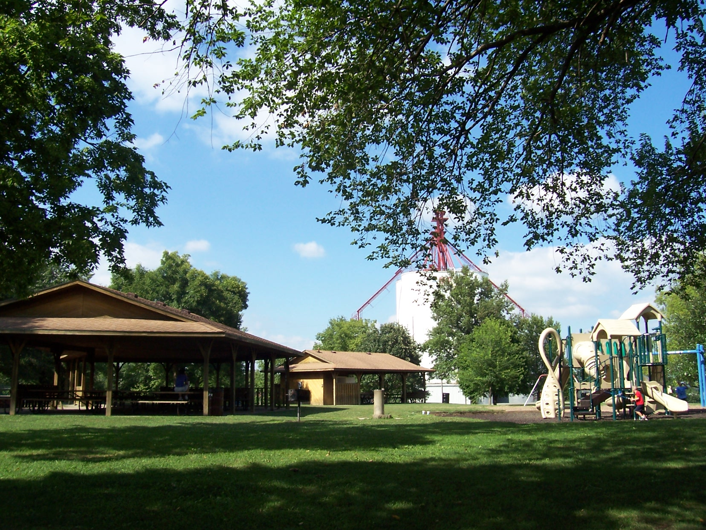
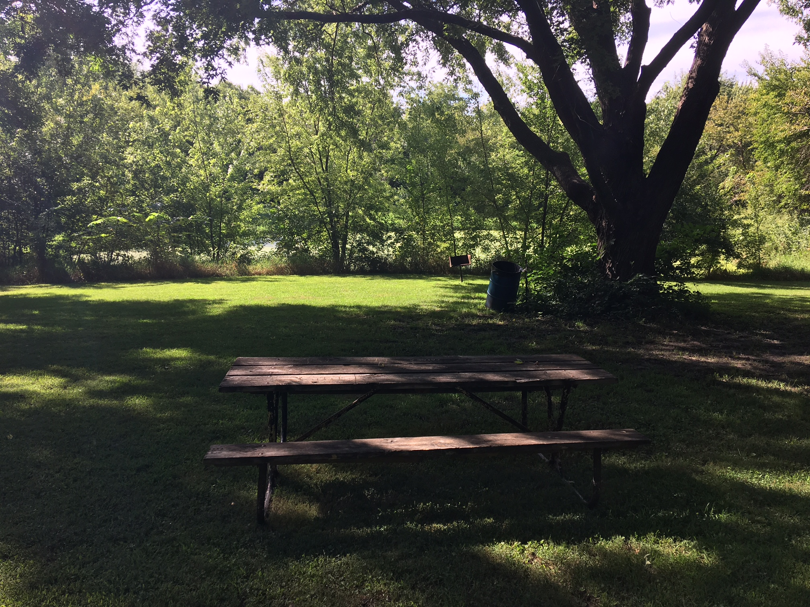
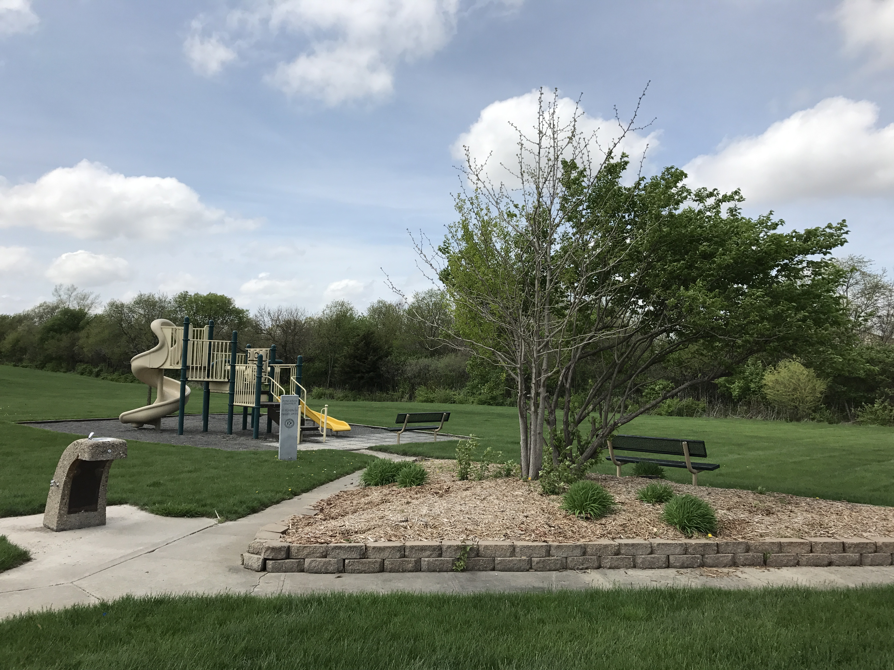
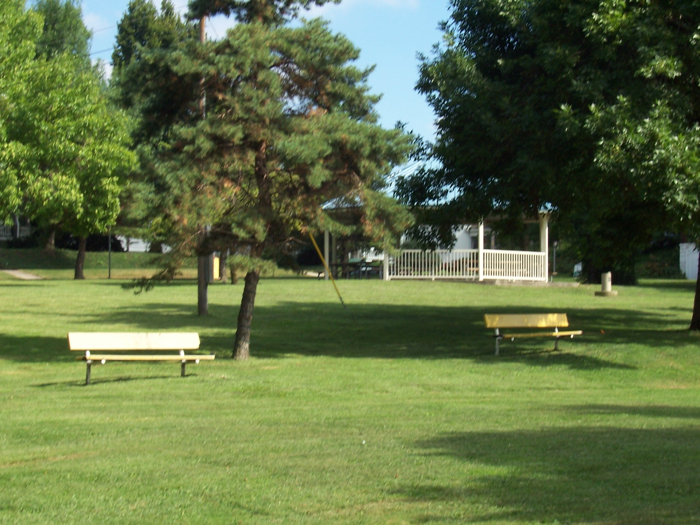
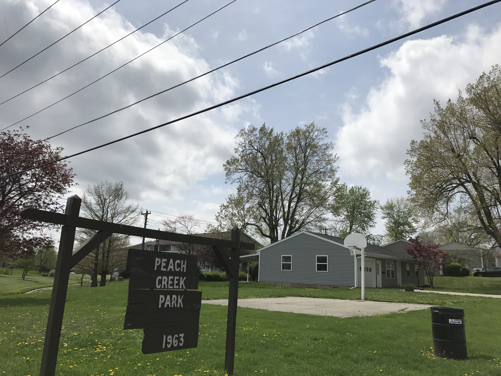
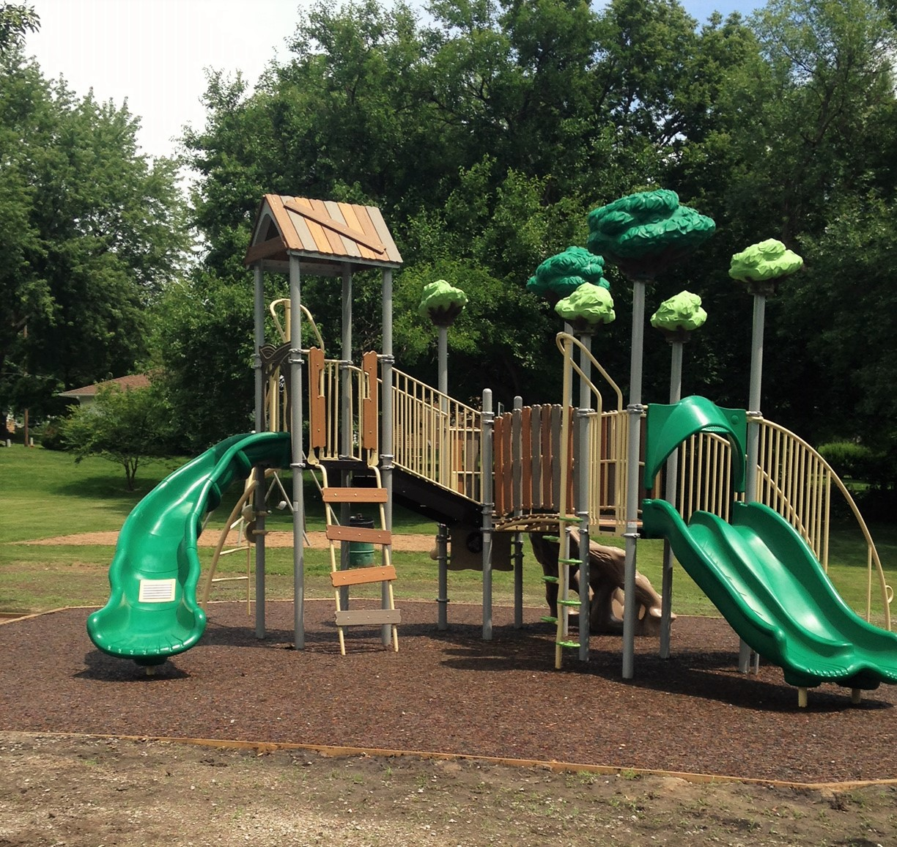
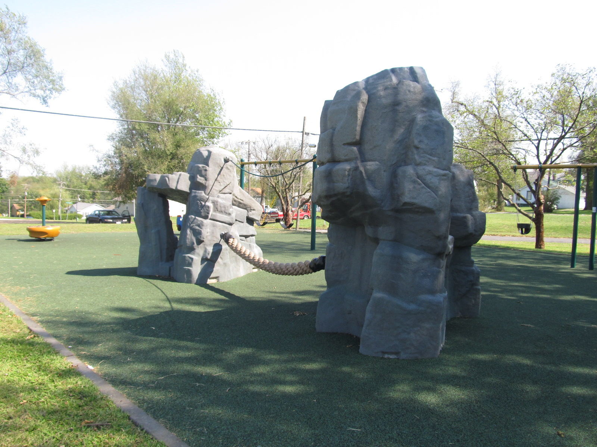

Park Information
- Beal Park
Beal Park is located at 700 N. Laura Street near Northwest Missouri State University. This park has two shelters with picnic tables and grills. It also contains a basketball court, two tennis courts, four baseball fields, and three sand volleyball courts. The location makes it ideal for any family gathering during the summer months as the Maryville Aquatic Center is located across the lot.
- Robertson-Crist Park
Robertson-Crist park is located at 519 Prather St. Although you have to look for the entry way, this park is considered the biggest out of all of Maryville's parks having 10.5 acres. This park is considered a nature park with it's abdunance of trees and wildlife which makes this park the perfect place to relax and take in all the beauty nature has to offer. Robertson-Crist contains a shelter, grill and picnic tables.
- Donaldson Westside Park
Donaldson Westside Park is located at 1000 N. Country Club Rd. Donaldson Westside Park is our newest park being built in early 2000's. This park contains four baseball fields, a football field, and five soccer fields making it the perfect location for any sporting event. Along with being a sports complex, there are two shelters, playground, skate park and amphitheater that is home to our June, Concerts in the Park series.
- Franklin Park
Franklin Park is located at 721 N. Main. This if very close to the downtown shopping district which makes it a perfect relaxation park. It is also the home of Missouri's first freedom rock at the Freedom Rock plaza; as well as Winter Wonderland throughout the month of December. This park contains one swing set and a shelter with picnic tables and grill.
-
 Happy Hallow Park
Happy Hallow ParkHappy Hallow Park is located at 709 E. Third. Although surrounded by neighborhoods, this is a perfect location for any birthday or family gathering. With plenty of open space, basketball court, swing set and playground structure your family is bound to have plenty of fun spending the day outdoors.
-
 Judah Park
Judah ParkJudah Park is located at 615 W. Thompson. With a walking trail, playground, basketball court, shelter, and plenty of open field to run around, this park is the perfect location for any family outing.
- Peach Creek Park
Peach Creek Park is located at 704 W. Edwards near Judah Park. This park is considered the smallest out of all Maryville's parks only containing a basketball court.
- Sisson-Eek Park
Sisson-Eek Park is located at 406 W. Lincoln. This park was renovated in 2016/2017 by installing a new playground, building a new shelter, and concreting ADA accessible sidewalks. Sisson-Eek is home to a open field, basketball court and new swing set which includes Maryville's only parent-tot swing.
-
 Sunrise Park
Sunrise ParkSunrise Park is located at 1316 E. Halsey. This park has one of the newest playground structures as well as the most unique. With a shelter that can fit multiple people, trees that create shade, a baseball field, basketball court and plenty of open space to run it is the perfect place for an afternoon picnic, family reunion or just a day to spend outdoors.
- Wabash Park
Wabash Park is located at 915 N. Mulberry. Although Wabash Park has plenty of playground equipment it is most known for it's basketball courts where you can almost find a pickup game. Along with plenty of open field and a big hill kids enjoy rolling down, you can find a shelter with a grill.